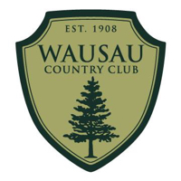

Home
My name is Will Hagedorn, I am a Computer Science and Data Science major at UW Madison. This is my first attempt at a website (so be nice). It is a collection of projects and ventures that I enjoy. I hope you enjoy as well. Below are some of current work experience and relavent course work.
Experience
My work experience has proven my capabilities in trouble shooting numerous types of hardware on multiple operating systems. Additionally, it shows my aptitude for leadership, and my ability to work independently or as apart of team. Most importantly, these roles demonstrate my capabilities and eagerness for learning new skills in various positions, and my ability to apply these new skills to problem solve in a number of scenarios.
AV Laboratory Assisstant
January 2023 - Present * UW Madison

Prepped and maintained audio visual equipment and PCs based on UW staff needs.
Trouble shot audio visual equipment on Windows and Mac operating systems.
Interpreted staff needs and demonstrated use of desired equipment.
IT Support Intern
May 2023 - August 2023 * Domtar
Wiped, imaged, and built PCs to support a PC refresh cycle.
Trouble shot end user's hardware and software related issues with their technology to support the smooth function of mill processes.
Performed and trouble shot an IP phone refresh cycle.
Established workstations for incoming employees and interns.
Lifeguard
May 2021 - August 2022 * Wausau Country Club
Ensured the safety of all pool attendants.
Provided great customer service.
Organized and gave swimming lessons for patrons.
Lead lifeguard in-service and training
Relavent Coursework
Multivariate Calculus * Linear Algebra * Differential Equations
Java Programming - Data Structures * Data Science Modeling and Statistics with R